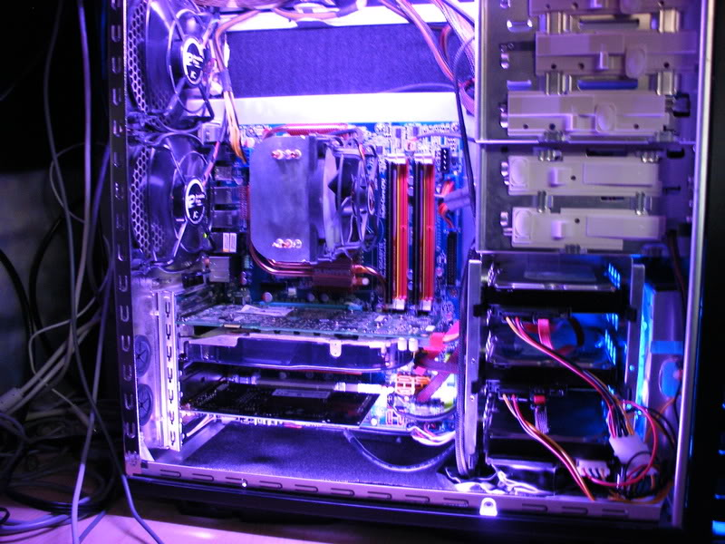
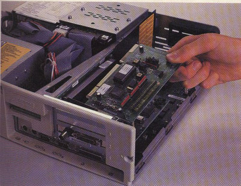
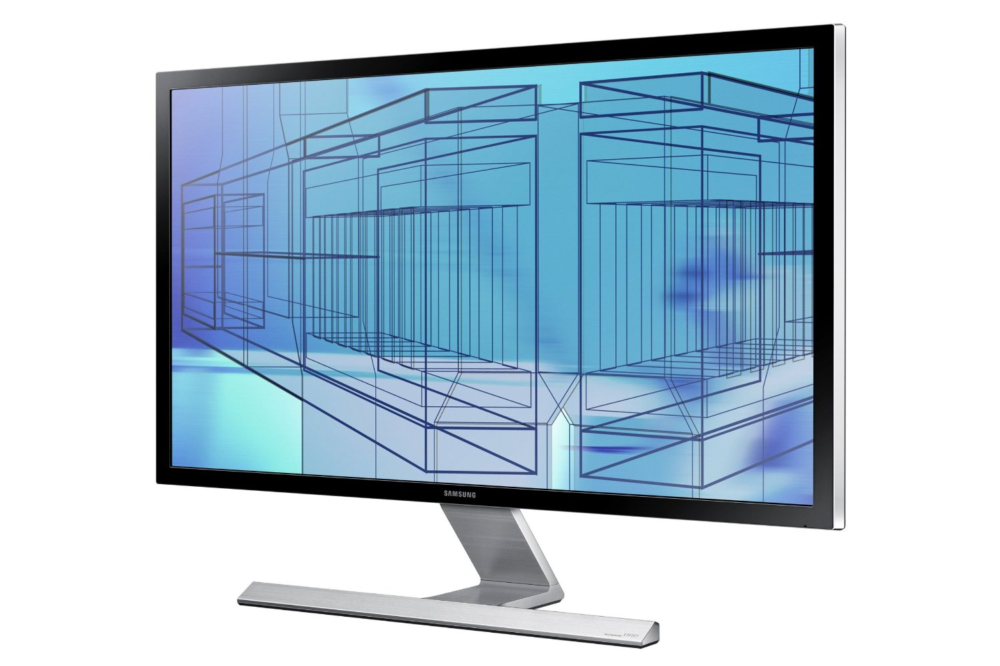
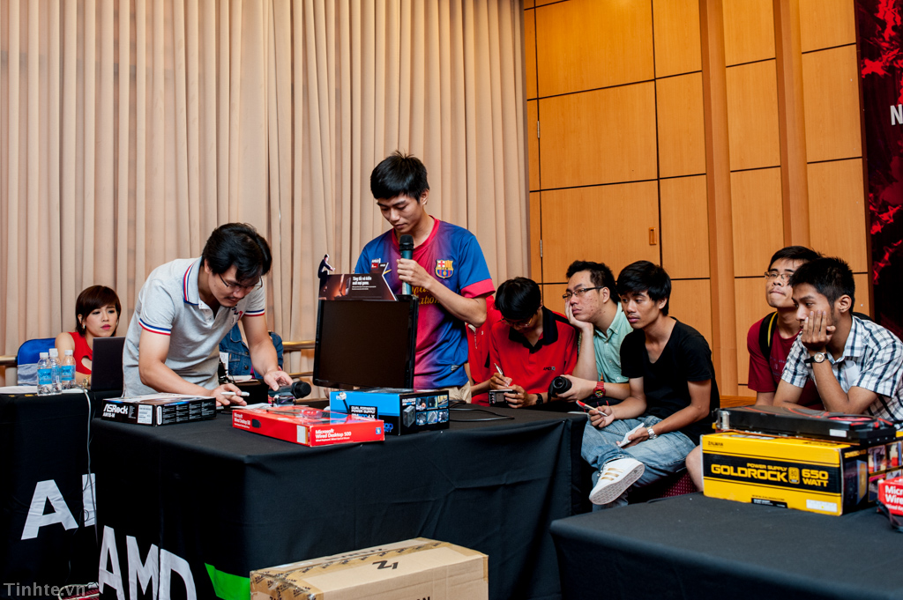

Sự bền vững của máy tính để bàn theo thời gian:
|
Hình 16: Steven Paul Jobs (24 tháng 2 năm 1955 - 5 tháng 10, 2011)
Steve Jobs - “ông chủ” của Apple- khẳng định như đinh đóng cột: “Khi chúng ta còn là một quốc gia nông nghiệp thì tất cả các loại xe hơi đều là xe tải. Nhưng khi chúng ta tiến dần lên đô thị thì mọi người mới bắt đầu sử dụng xe hơi theo đúng nghĩa của nó. Tôi nghĩ PC hiện nay đang là xe tải bởi càng có ít người cần tới chúng. Thay vào đó, họ muốn những thứ thay thế khác như iPad hoặc các thiết bị tương tự như thế để có được những trải nghiệm sử dụng tiện lợi và trực quan hơn”.
Nhưng câu nói đó liệu có thật sự là đúng hay không? Ta hãy xem những lợi thế mà máy tính để bàn có được, liệu rằng các thiết bị điện toán di động có thể đạt được, ít nhất là trong vài thập niên nữa.
Mức giá phải chăng:
Máy tính để bàn rẻ hơn laptop – rẻ hơn cả khi bạn mua mới và cả khi phải sửa chữa. Có một số lý do nhưng cơ bản là các linh kiện di động đắt hơn, bởi chúng nhỏ hơn nên việc sản xuất đắt đỏ hơn. Linh kiện cho máy tính để bàn không nhất thiết phải nhỏ như linh kiện laptop, bởi máy tính để bàn có nhiều chỗ để lắp các thiết bị lớn hơn nhiều so với những mẫu laptop lớn nhất.
Laptop thường có giá cao hơn máy tính để bàn ít nhất là 60 USD. Chẳng hạn, một chiếc Dell XPS 8500 – dùng bộ vi xử lý Intel core i7 thế hệ thứ 3, RAM 8GB, ổ cứng 1TB và card đồ hoạ rời AMD Radeon 7570 – có giá 799 USD (khoảng 16,6 triệu đồng) trên website của Dell. Trong khi đó, mẫu laptop tương tự Dell Inspiron 14z – với bộ vi xử lý Intel core i7 thế hệ thứ 3, RAM 8GB, ổ cứng 500GB và card đồ hoạ AMD Radeon HD 7570M graphics card – có giá 999 USD (20,8 triệu đồng).
Hình 17: Giá cả đôi khi lại quyết định tất cả.
Máy tính để bàn mạnh hơn:
Các bộ vi xử lý của máy tính để bàn mạnh hơn các bộ vi xử lý tương ứng của laptop. Bởi vì, các vi xử lý laptop không chỉ nhỏ hơn máy tính để bàn mà chúng còn được thiết kế để tiêu tốn ít điện hơn, chạy ít nóng hơn. Laptop thường hoạt động dựa vào pin, do đó các vi xử lý di động phải được thiết kế để bảo tồn thời lượng pin.
Thứ hai, bộ vi xử lý laptop phải nhỏ, vừa vặn trong bộ khung máy kín đáo được bao quanh bằng các quạt nhỏ để tránh quá nóng. Trong khi đó, bộ vi xử lý máy tính để bàn dùng nguồn điện trực tiếp và được bao quanh bằng các quạt hay hệ thống làm mát để giữ nhiệt độ giảm xuống. Vì thế, chúng không những mạnh hơn, mà còn dễ hoạt động ở tốc độ cao hơn.

Hình 18: Các bộ phận bên trong của một CPU thông thường.
Tương tác với các thiết bị ngoại vi:
Bạn muốn cắm thêm chuột và bàn phím ngoài, bạn có thể cắm thêm đầu kết nối USB không? Nếu đó là laptop, có thể không? Laptop mỏng hơn, các cổng ngoại vi ít hơn. Hầu hết laptop ngày nay có 2 cổng USB 2.0, một số máy cao cấp hơn có thể có thêm cổng USB 3.0. Hầu hết tablet có 1 cổng USB 2.0 (iPad không hề có cổng USB nào). Trái lại, máy tính để bàn thường có ít nhất 4 cổng USB 2.0, thậm chí nhiều hơn. Máy tính để bàn còn có nhiều tuỳ chọn kết nối khác mà chỉ những laptop cao cấp, dành cho game thủ mới có thể có – như eSATA, VGA, DVI, HDMI và nhiều đường âm thanh.

Màn hình rộng và độ phân giải cao:
Các nghiên cứu cho thấy màn hình càng lớn thì hiệu quả công việc càng cao. Với máy tính để bàn, nếu bạn muốn có nhiều diện tích màn hình, bạn có hai cách: sắm màn hình lớn hoặc sử dụng nhiều màn hình. Trong khi đó, laptop có màn hình lớn trên thị trường hiện nay là 17.3 inch. Cỡ màn hình đó chưa là gì so với màn hình 20 hay 24 inch của máy tính để bàn. Hơn nữa, laptop 17.3 inch di chuyển rất cồng kềnh và như thế nó có thể biến thành một chiếc máy tính để bàn. Hầu hết laptop không hỗ trợ thiết lập nhiều màn hình. Ngược lại, máy tính để bàn lại được thiết kế để thiết lập nhiều màn hình và phụ thuộc vào card đồ hoạ, bạn có thể hỗ trợ tới 2, hay 3, 4 màn hình để tối đa hiệu quả làm việc hay chơi game.

Hình 19: Một màn hình rộng đúng nghĩa có thể cho bạn nhiều trải nghiệm giải trí thú vị.
Nhu cầu giải trí:
Bạn có thể chơi game máy tính "thực sự" trên laptop?
Thực tế, đã có các laptop chơi game và chúng không hề tồi. Chẳng hạn, mẫu laptop Alienware M17x R4 trang bị vi xử lý Intel Core i7-3720QM và card đồ hoạ rời Nvidia GeForce GTX 680M. Nhưng liệu nó có thể so sánh thực sự với một máy tính để bàn chơi game như Maingear Shift Super Stock – máy có vi xử lý Intel Core i7-3960X và 3 card đồ hoạ rời AMD Radeon HD 7970? Những game máy tính nặng đồ hoạ cần sức mạnh GPU và vi xử lý càng nhiều càng tốt. Chẳng hạn, bạn có thể đưa 3 card đồ hoạ vào một máy tính để bàn (cùng với thiết bị làm mát, card âm thanh đỉnh và thậm chí một số thiết bị ngoại vi nữa dành cho game). Trong khi đó, một laptop chơi game có thể chỉ dung nạp nổi một card đồ hoạ.
Hình 20: Đối với game thủ, họ đòi hỏi yêu cầu máy khá cao.
Dễ dàng sửa chữa:
Nếu một linh kiện nào đó của máy tính để bàn hỏng, bạn có thể dễ dàng mua một cái mới, dù đó là card đồ hoạ, màn hình hay thậm chí là bộ vi xử lý. Nhưng nếu linh kiện laptop hỏng, bạn sẽ khó mua linh kiện thay thế hơn và giá lại đắt hơn.
Hình 21: "Bắt mạch" cho máy tính bàn thì đơn giản hơn nhiều so với laptop.
Dùng phần mềm thiết kế hiệu quả:
Laptop ngày nay có thể chạy các phần mềm thiết kế như Adobe Photoshop hay Premiere nhưng bạn sẽ không thoải mái với những ứng dụng này khi phải dùng trackpad hay màn hình hạn chế của laptop. Để sử dụng hiệu quả phần mềm thiết kế cần một vi xử lý mạnh mẽ, card đồ hoạ cao cấp, màn hình lớn và các thiết bị ngoại vi như chuột, bàn phím. Laptop với những thông số kỹ thuật cao đáp ứng nhu cầu sử dụng phần mềm đồ họa sẽ rất đắt và màn hình nhỏ. Trong khi đó, máy tính để bàn với những thông số kỹ thuật kha khá sẽ có thể chạy những phần mềm này rất tốt.
Hình 22: Yêu cầu loại máy dành cho lĩnh vực thiết kế cũng không hề đơn giản.
Có thể tái chế thành thiết bị khác:
Khi laptop hay tablet của bạn "chết", bạn có thể tái chế chúng thành những thiết bị vẫn là laptop hay tablet, như laptop cho trẻ em chơi, hay tablet dùng trong nhà bếp. Nói cách khác, lựa chọn tái chế rất hạn chế. Nhưng máy tính để bàn có thể tái chế thành nhiều thứ khác nhau, như máy chủ gia đình hay thiết bị lưu trữ mạng (network-attached storage - NAS).
Hình 23: Một hệ thống NAS đơn giản
Máy tính để bàn an toàn và có tuổi thọ lâu hơn:
Máy tính để bàn không di động và đây là điều kiện tốt để nói nó an toàn và bền hơn laptop. Do máy tính để bàn không di chuyển nhiều nên chúng ít bị lấy cắp. Bạn sẽ hầu như không gặp phải tình huống mất máy tính để bàn trên tàu hay ở thư viện. Thậm chí, nếu ai đó đột nhập vào nhà, chúng cũng ít khi lấy máy tính để bàn vì chúng phải rút dây điện cắm trong tường và di chuyển tất cả thiết bị ngoại vi đính kèm. Vì máy tính để bàn ít khi bị di chuyển, chúng sẽ không bị rơi hay cào xước. Vì vậy, máy tính để bàn có thể dễ dàng "sống" được nhiều năm liền – và nhiều hơn nữa nếu bạn nâng cấp các linh kiện.
|
Hình 24: Sẽ trở nên khó khăn thế nào khi mất một chiếc máy tính đắt tiền.
Bạn có thể tự ráp một chiếc máy tính để bàn cho mình:
Bất kỳ ai cũng có thể tự dựng một chiếc máy tính để bàn cho mình. Không chỉ có hàng tấn website và bài báo hướng dẫn mọi người cách dựng một chiếc máy tính để bàn mà các linh kiện máy cũng có bán ở nhiều nơi. Trong khi đó, dựng laptop rất … rủi ro nếu không muốn nói là không thể. Các linh kiện đắt hơn và kém mạnh hơn, và bạn phải làm thế nào để chúng "chui" vừa vặn trong khung laptop. Có thể nói, hầu như không có cơ hội để bạn tự dựng laptop. Máy tính để bàn sẽ sống mãi! Không thể phủ nhận laptop, tablet và smartphone là những vật dụng cần thiết trong đời sống hiện đại của mọi người. Nhưng miễn là máy tính để bàn rẻ hơn, mạnh hơn và linh hoạt hơn, nó vẫn luôn có chỗ trong đời sống của chúng ta.
